- Develop booking, parking-session, payment, and assigned-space routing workflows.
- Create the first live digital twin and connect it to the real parking data.
Tasks outlined for this period
The tasks for this reporting period, as set in the project milestones.
Group
Student AMohamed Abouzaid
- Implement website availability, spot selection/reservation, parking time/cost, test payment flow, and routing service.
- Build digital-twin view and bind spaces, gate state, routes, reservations, and live data.
Student BAshwini Erambalur
- Provide stable space IDs, occupancy confidence, and space coordinates for routing.
- Feed occupancy and vehicle-tracking data to the digital twin.
Student CJulian Vila
- Support reservation-based entry authorization and test booked/full/cancelled/exit scenarios.
- Send gate state and entry/exit events to backend/twin.
Student DEzz Alzokm
- Validate user flow: Find → Book → Pay/Confirm → Enter → Route → Park → Exit.
- Validate physical prototype state against website and digital twin.
Progress made
What each member completed during this period, mapped to the tasks above.
Group
Not yet reported.
Student AMohamed Abouzaid
This period we extended ParkFlow so a parking provider can draw a 3D map of one floor of their building, place cameras on it, and link each camera to the parking spaces it can see. The backend now stores each space's live state (free, taken or unknown), so a camera running a YOLO detection model can report changes to the API and everyone can watch the floor update on a live 3D map.
Each approved provider manages their parking buildings on a real map, and every building now has a Floor map button that opens the editor (Figure 1). Buildings stay hidden from customers until an admin approves the provider's account.
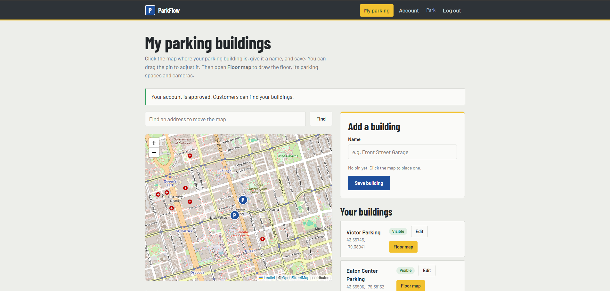
We built the editor in the web app with Three.js, where the provider sets the floor size, draws walls, places columns and adds parking spaces one at a time with editable names and sizes (Figure 2). In our test building, Victor Parking, we drew a 60 x 40 m ground floor with 5 walls, 4 columns and 12 spaces (A01 to A08 and B01 to B04).
A camera is mounted by clicking on or next to a wall or column, and it automatically faces away from that surface. The provider then clicks the spaces each camera can see; each camera gets its own colour, each space can belong to only one camera, and a Checks panel lists the spaces that have no camera yet.
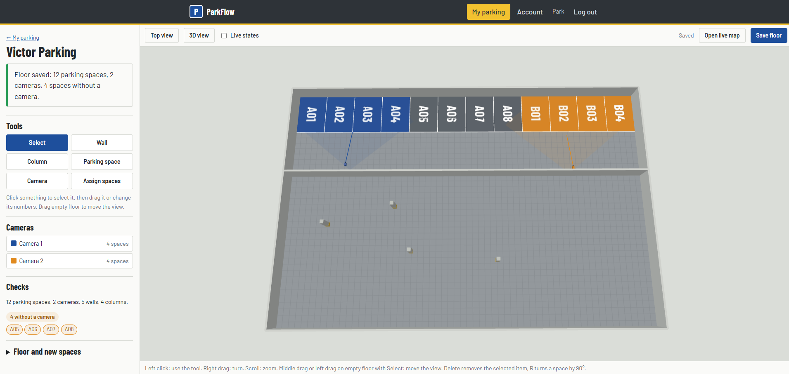
The whole floor can be turned and zoomed in 3D, which makes it easy to check where walls, columns and cameras sit before saving (Figure 3).
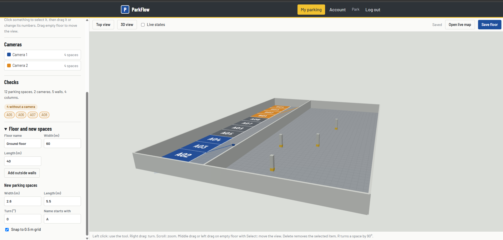
A new database migration adds floors, walls, columns, cameras, spaces and an occupancy history table, and the database already supports several floors per building even though the editor shows one. Each camera gets its own secret device key, which the future YOLO program uses to report a space's new state only when it changes; the server rejects any space that belongs to a different camera and logs every change.
Any logged-in user can open a read-only live map that colours spaces green (free), red (taken) or grey (unknown) and refreshes every 5 seconds (Figure 4). We tested it by sending a report for camera 1 from the command line, and space A01 turned red within one refresh.
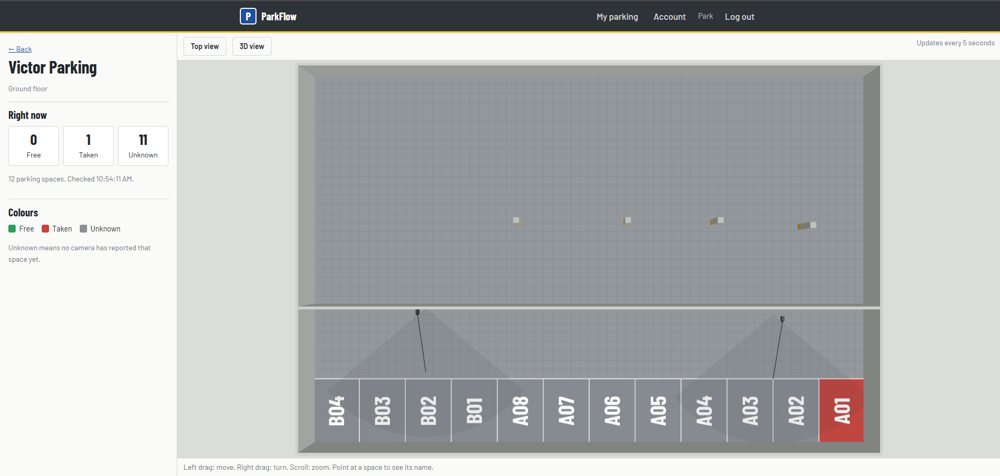
We added 6 automated API tests covering saving and reloading floors, layout rules, ownership checks, device keys and occupancy reports, and all 37 tests in the project pass. The application now runs locally against the PostgreSQL database on our VPS instead of a local test database.
Video: building a floor and placing cameras
This video explains how the Parking Provider uses the system to create a 3D model for the parking space and places the cameras on the model.
Student BAshwini Erambalur
- Implemented YOLO ByteTrack to assign tracking IDs to detected vehicles.
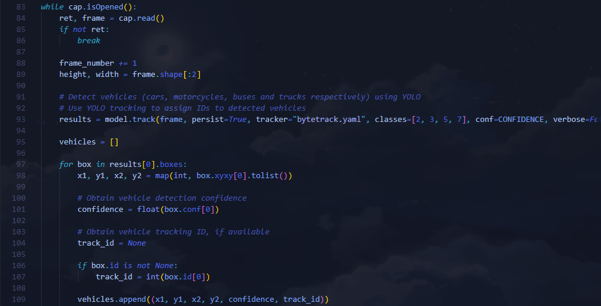
The above program detects the different types of vehicles using the YOLO pretrained model. As shown above, 2–cars, 3–motorcycles, 5–buses and 7–trucks. ByteTrack associates a vehicle with a specific ID, and is able to recognize the vehicle as it moves through the capture using a predictive algorithm that compares the current and next frame locations of the bounding boxes of the vehicle. Different vehicles that are tracked by YOLO are assigned different IDs, while the same vehicle has its ID retained. The ID is stored in the box.id variable.
The vehicle ID is then extracted from the ByteTrack variable and stored into the vehicles array, along with the confidence of YOLO detecting a vehicle, and the coordinates in which the vehicle's bounding box is in the footage.
- Established stable parking-space IDs (P1–P6) and calculated their center coordinates.
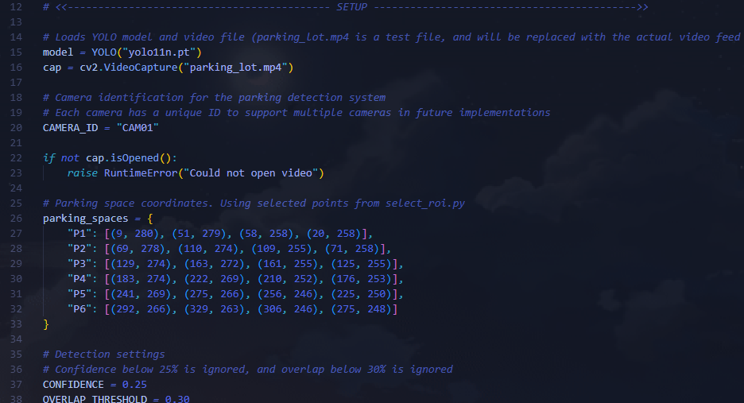
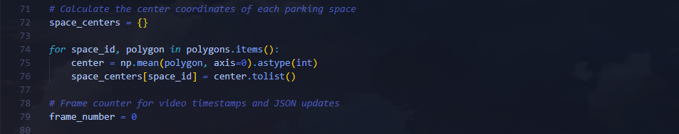
The parking space coordinates were manually assigned using the select_roi.py program (See Figure 4.) to six parking space IDs (since the prototype requires a minimum of six parking spaces in the model). To ensure accuracy of the vehicle detection, any objects in which the YOLO model determines to be a vehicle with less than 25% confidence are ignored, and the overlap for a vehicle to occupy a parking space must be over 30%.
The center coordinates are used as a means to simplify the identification of the parking space without using the four ROI coordinates.
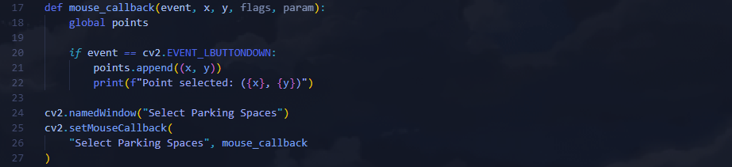
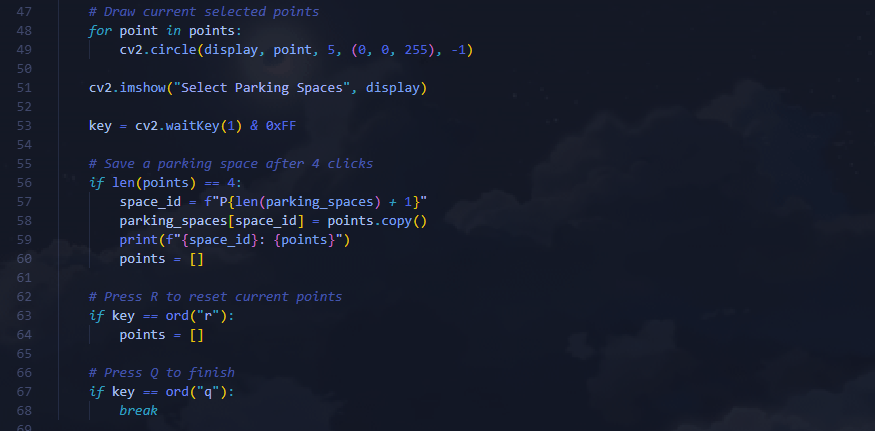
- Use YOLO detection confidence for each parking space to support detection reliability assessment and digital twin integration.
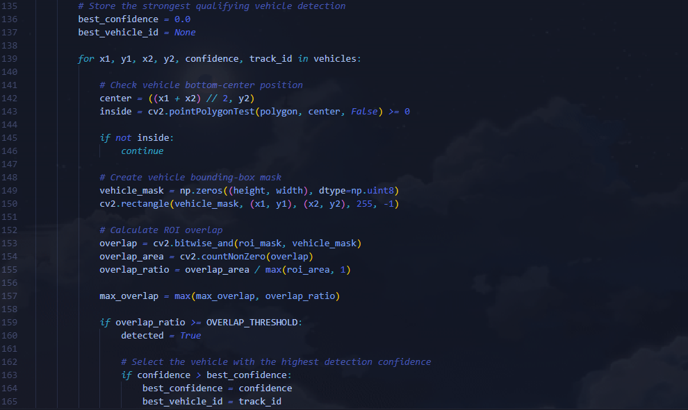
Figure 5 displays how the program retrieves the confidence of each passing vehicle and stores that value in the parking space information. If there are multiple vehicles qualifying for the same parking spot, the program chooses the vehicle that it has a higher confidence of (has a higher probability of being an actual vehicle). This ensures that the vehicle is detected accurately and the correct information (vehicle ID + confidence) is saved in the .json and transmitted to the backend.
- Extended the occupancy system to export JSON data containing space availability, confidence, vehicle IDs, and coordinates.
- Implemented automatic JSON updates every second of video.
- Successfully tested the JSON output and prepared the data structure for digital twin integration.
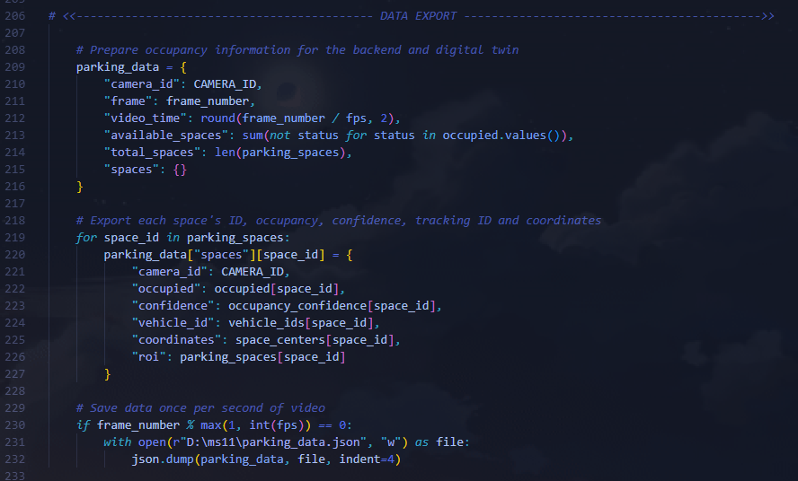
The section of code displayed in Figure 6 corresponds to the export of important vehicle data to a .json file every second of the capture, which can then be used in the backend and digital twin integration.
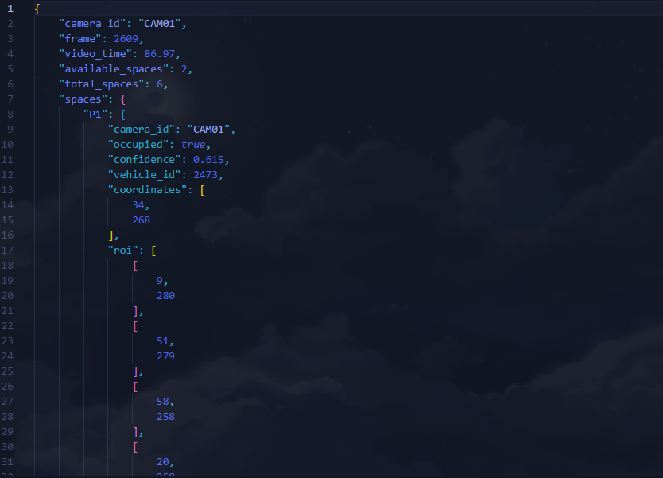
Student CJulian Vila
- Updated FSM to support reservation-based entry authorization and tested logic through simulated hardware/test values.
The base FSM for the gate controller was extended with reservation-based entry authorization, so the lot now manages two kinds of demand: walk-in drivers and drivers holding a prior reservation.
The controller tracks availableSpaces (physically free spaces) and a count of active reservations. The difference is generalAvailable, the spaces a walk-in may use. Reserved spaces are therefore held back even though they are physically empty.
Reservation records. Each reservation has a code, an expiry time, and active and inUse flags. A reservation can only be created if an unreserved space exists, so reservations can never exceed capacity.
Entry logic. A driver with a valid code is admitted even when walk-in spaces are exhausted. A walk-in is admitted only if an unreserved space exists. If only reserved spaces remain, the gate enters an AUTH_WAIT state for 10 s and waits for a code. If the lot is physically full, it blocks entry.
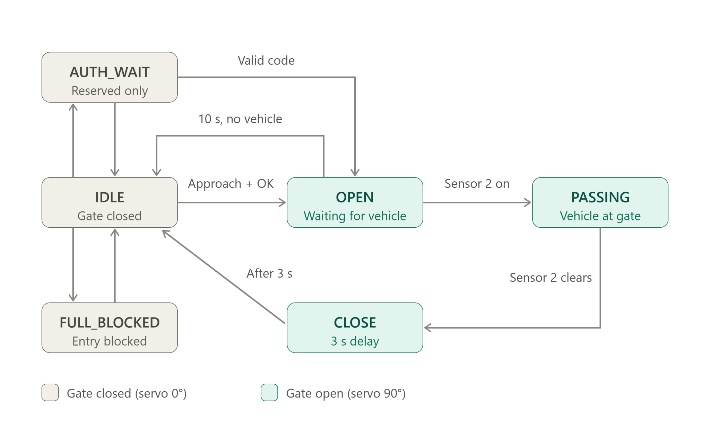
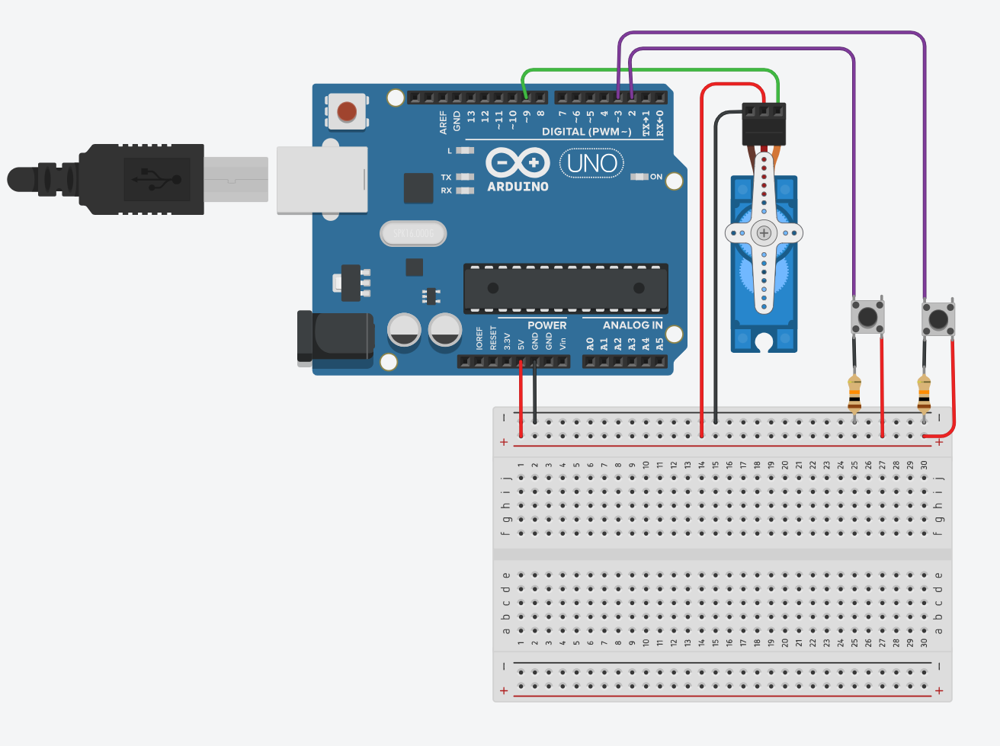
Student DEzz Alzokm
- Created test scenarios covering the full user flow from finding an available spot to booking, payment confirmation, entry, routing, parking, and exit.
- Checked booking scenarios involving available, occupied, and already-reserved spaces to verify the expected system responses.
- Set up a comparison of parking-space occupancy, available-space count, and gate status between the physical prototype, website, and digital twin.
- Prepared tests to check whether parking and exiting update the space status consistently across all three systems.
Difficulties encountered
Issues found during the period and how we addressed them or plan to.
Group
Not yet reported.
Student AMohamed Abouzaid
During this work we ran into a few problems. Placing cameras was hard in the top view, because a 0.6 m column is only a few pixels wide, so we changed the editor to mount a camera on the nearest wall or column face to the click. Saving the whole floor at once also caused a problem: new spaces had to point to cameras that did not have a database id yet. We solved it by giving each camera a temporary reference that the server swaps for its real id when saving.
Connecting the app on our PC to the PostgreSQL database on the VPS first failed, because the server did not allow our IP address. We had to add the IP to the server's access list (pg_hba.conf) and reload PostgreSQL. Finally, our first command-line test of the camera API was rejected as invalid JSON, because the Windows Command Prompt handles quotes differently from PowerShell, and we fixed this by escaping the quotes in the request.
Student BAshwini Erambalur
1. Current development and optimization challenges
- Vehicle tracking consistency and duplicate detections require further testing using prerecorded footage, preferably from various sources.
- Passing or briefly stopped vehicles may continue to cause false occupancy readings.
- Detection confidence and ROI overlap thresholds require further optimization to minimize false positives.
- Multi-frame confirmation delays need to be evaluated for accuracy and responsiveness.
2. Testing deferred until physical implementation
- Camera positioning and ROI calibration must be verified using actual camera feed.
- Detection accuracy under real-world lighting, shadows, and occlusions requires further testing.
- Real-time processing performance and latency must be evaluated with the physical camera.
Student CJulian Vila
Two sensors in series can detect that something passed, but they can't reliably tell an entry from an exit, causing a count inaccuracy. Further troubleshooting is required to resolve this issue. Such cases that can corrupt the count include:
- A vehicle stopping or reversing in the beam.
- Two cars tailgating through one gate cycle, which the current logic counts as one.
- A sensor being temporarily blocked.
- An entry and an exit happening at the same moment.
Student DEzz Alzokm
- Some website features were still being worked on, making it difficult to test the full booking and payment process. More testing will be done once everything is connected.
- The parking-space status did not always match between the physical prototype, website, and digital twin. Further testing is needed to make sure they all update correctly.
Tasks for the next period
The milestone tasks planned for the next reporting period.
Group
- Run complete end-to-end integration: CV → backend → website/routing/twin → gate/display.
- Tune application and CV modules using measured results.
Student AMohamed Abouzaid
- Integrate all application modules; add operator monitoring/event history.
- Improve backend/UI performance, routing behavior, and recovery handling.
Student BAshwini Erambalur
- Test lighting changes, temporary occlusion, stopping/reversing, and duplicate detections.
- Tune detection confidence, overlap thresholds, tracking, and frame confirmation.
Student CJulian Vila
- Test repeated gate cycles, timing, fail-safe behavior, and sensor faults.
- Tune gate timing and implement fault/recovery handling.
Student DEzz Alzokm
- Run a full-system test matrix and collect accuracy, latency, and reliability data.
- Analyze results, verify fixes, and maintain requirement traceability.